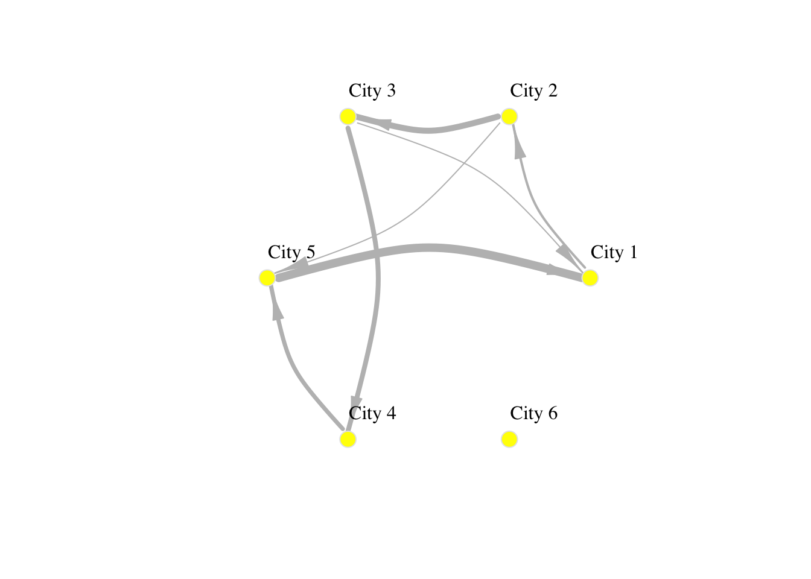
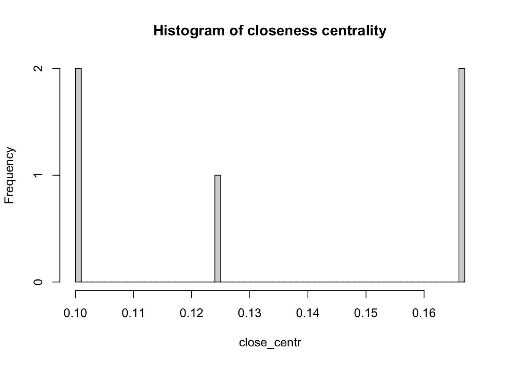

# working with spatial data
library(sf)
# data manipulation and visualisation
library(tidyverse)
# network manipulation and analysis
library(igraph)2 Introduction to the basics of network analysis
2.1 Dependencies
We first clean the environment and load all the libraries required for this section.
2.2 Creating networks
Networks are used as a tool to conceptualise many real-life situations where a group of items display connections among themselves, such as the friendships among members of a school year group, airline flights between cities or hyperlinks between websites. Generally, a network (or a graph) consists of nodes (a.k.a. vertices) and edges (a.k.a. links) which represent the connections between the nodes of the network.
2.2.1 Starting from the basics
To understand the basic concepts and components of a network, we create a small example network in R using the igraph package. We create an undirected network of 5 nodes and 6 edges.
# create a graph object
network <- graph(
n = 5, # add number of nodes
edges = c(1,2,
2,3,
2,5,
3,1,
3,4,
4,5,
5,1), # add edges
directed = FALSE )
# plot
plot(network,
layout = layout.circle(network), # set layout
vertex.label = 1:5)
If the connections between the nodes of a network are non-reciprocal, the network is called directed.
# create a graph object
network <- graph(
n = 5, # add number of nodes
edges = c(1,2,
2,3,
2,5,
3,1,
3,4,
4,5,
5,1), # add edges
directed = TRUE )
# plot
plot(network,
layout = layout.circle(network), # set layout
vertex.label = 1:5)The network can also be defined as a list containing pairs of nodes with labels. In that case we do not need to specify the number of nodes. We only specify the isolated nodes to be included.
Note
We will describe the various arguments within plot which can be used to style your data visualisation
# create a graph object
network_isolated <- graph(
c("City 1","City 2",
"City 2","City 3",
"City 2","City 5",
"City 3","City 1",
"City 3","City 4",
"City 4","City 5",
"City 5","City 1"),
isolates=c("City 6") # isolated node
)
# plot
plot(network_isolated,
layout = layout.circle(network_isolated),
vertex.frame.color="red",
vertex.color="yellow",
vertex.size=15,
vertex.label.color="black",
vertex.label.cex=0.9,
vertex.label.dist=2.3,
edge.curved=0.3,
edge.arrow.size=.5,
edge.color = "blue"
) 
2.2.2 Adding attributes
We can add attributes to individual components of the network. To add attributes to nodes, we need to access them:
V(network_isolated)+ 6/6 vertices, named, from 8249b08:
[1] City 1 City 2 City 3 City 5 City 4 City 6Node attribute names are automatically generated from the node labels we assigned.
V(network_isolated)$name[1] "City 1" "City 2" "City 3" "City 5" "City 4" "City 6"Additional node attributes can be added, such as population size:
V(network_isolated)$population <- c(92000, 549000, 1786000, 74000, 8000, 21000)We can also access the edges:
E(network_isolated)+ 7/7 edges from 8249b08 (vertex names):
[1] City 1->City 2 City 2->City 3 City 2->City 5 City 3->City 1 City 3->City 4
[6] City 4->City 5 City 5->City 1We can add edge attributes, such as the number of people moving from an origin to a destination city. We call this attribute edge weight. The size of the connection between two places often represent their importance or “weight” in the network.
E(network_isolated)$weight <- c(2000, 5000, 1000, 1000, 4000, 3500, 7000)We can examine the adjacency matrix of the network. The adjacency represents the presence of edges between different pairs of nodes. In our example, each row corresponds to an origin city and each column to a destination:
network_isolated[]6 x 6 sparse Matrix of class "dgCMatrix"
City 1 City 2 City 3 City 5 City 4 City 6
City 1 . 2000 . . . .
City 2 . . 5000 1000 . .
City 3 1000 . . . 4000 .
City 5 7000 . . . . .
City 4 . . . 3500 . .
City 6 . . . . . .We can also look at the existing node and edge attributes.
vertex_attr(network_isolated)$name
[1] "City 1" "City 2" "City 3" "City 5" "City 4" "City 6"
$population
[1] 92000 549000 1786000 74000 8000 21000And we can add network attributes:
network_isolated$title <- "Network of human mobility between cities"2.2.3 Basic visualisation
You have already seen how we can visualise networks using the base R function plot(). We will now elaborate on how individual components of the network can be visually adjusted using specific parameters in the plot function. More sophisticated data visualisations can be produced integrating geographic information, see Chapter 5 in Rowe, Cabrera-Arnau, and Piestrostefani (2023), or using other packages such as ggraph in conjunction with ggplot2 as we will see in the section on Percolation.
plot(network_isolated,
layout = layout.circle(network_isolated),
# adjust nodes
vertex.frame.color = "gray90", # line colour
vertex.label.color = "black", # label colour
vertex.label.cex = 1, # label font size
vertex.label.dist = 3, # label distance
vertex.color = "yellow", # colour
vertex.size=10, # size
# adjust edges
edge.curved=0.3, # curvature
edge.arrow.size=1.5, # size
edge.arrow.width=.5,
edge.width=E(network_isolated)$weight/1000,
edge.color = "gray") # colour
2.3 Network metrics
Next we will provide a brief description of commonly used metrics to analyse the basic structure of networks.
2.3.1 Density
The density of a network refers to the proportion of existing edges over all possible edges. In a network with \(n\) nodes, the total number of possible edges is \(n \times (n-1)\). A density equal to \(1\) corresponds to a situation where \(n \times (n-1)\) edges are present. A network with no edges at all would have density equal to 0. We can obtain the density of a network by running the following code:
edge_density(network_isolated,
loops=FALSE)[1] 0.23333332.3.2 Reciprocity
The reciprocity in a directed network is the proportion of reciprocated connections between nodes (i.e. number of pairs of nodes with edges in both directions) from all the existing edges.
reciprocity(network_isolated)[1] 02.3.3 Degree
The degree of a node is the number of edges connected to it. The in-degree of a node in a directed network is the number of edges ending in a given node. The out-degree is the number of edges starting from a given node. The degree() function allows computing the degree of one or more nodes, and specifying the measures of interest i.e. the total degree, in-degree or out-degree.
# compute in-degree
net_degree <- degree(network_isolated,
v=V(network_isolated),
mode="in")
# display histogram of in-degree
hist(net_degree,
breaks = 30,
main = "Node in-degree")2.3.4 Distance
A path in a network between node \(A\) and node \(B\) is a sequence of edges joining distinct nodes, starting at node \(A\) and ending at node \(B\). In a directed path all edges follow the same direction.
The path length of a path between nodes \(A\) and \(B\) is generally defined as the number of edges forming this path. The shortest path is the minimum count of edges present to travel from \(A\) to \(B\).
The path length can be defined in alternative ways. For example, the path length can be defined as the sum of the weights of the edges forming a path if the edges are weighted.
We can use the function shortest_paths() to find the shortest path between a given pair of nodes:
shortest_paths(network_isolated,
from = V(network_isolated)$name == "City 1",
to = V(network_isolated)$name == "City 5",
weights=NA, # if weights = NULL and a weight edge attribute is present, this is used.
output = "both", # outputs are produced for both path nodes and edges
predecessors = FALSE,
inbound.edges = FALSE,
)$vpath
$vpath[[1]]
+ 3/6 vertices, named, from 8249b08:
[1] City 1 City 2 City 5
$epath
$epath[[1]]
+ 2/7 edges from 8249b08 (vertex names):
[1] City 1->City 2 City 2->City 5
$predecessors
NULL
$inbound_edges
NULLOf all shortest paths in a network, the longest path length is the network diameter.
diameter(network_isolated,
directed=TRUE,
weights=NA)[1] 4The mean distance is the average length of all shortest paths in the network. The mean distance will always be smaller or equal than the diameter.
mean_distance(network_isolated,
directed=TRUE,
weights=NA)[1] 22.3.5 Centrality
Centrality metrics assign scores to nodes (and sometimes also edges) according to their position within a network. These metrics can be used to identify the most influential nodes.
We can measure the degree of a node as we did before, but we can also measure its weighted degree. This is known as the strength of a node and it is computed as the sum of edge weights linked to adjacent nodes. Both degree and strength are considered to be centrality metrics.
# compute strength of network nodes
net_strength <- strength(network_isolated, # network object
vids = V(network_isolated), # vertices
mode = c("in"), # “in” for in-degree
loops = FALSE, # whether to loop the edge count
weights = NULL # if weights = NULL and a weight edge attribute is present, this is used.
)
# histogram
hist(net_strength,
breaks = 50,
main="Histogram of node strength")Another two important centrality metrics are (1) closeness centrality, and (2) betweenness centrality. Closeness centrality is a measure of the shortest path length between a node and all the other nodes. For a given node, it is computed as the inverse of the average shortest paths between that node and every other node in the network. A node with closeness centrality close to 1 indicates that on average the node is very close to the other nodes in the network. A closeness centrality of 0 represents an isolated node.
close_centr <- closeness(network_isolated,
mode="in",
weights=NA) # using unweighted edges
hist(close_centr,
breaks = 50,
main = "Histogram of closeness centrality")
Betweenness centrality is a measure of the number of shortest paths going through a node. Nodes with high values of betweenness centrality indicates that they play a very important role in the overall connectivity of the network. Betweenness can also be computed for edges.
between_centr <- betweenness(network_isolated,
v = V(network_isolated),
directed = TRUE,
weights = NA)
hist(between_centr,
breaks = 50,
main = "Histogram of betweenness centrality")
Rowe, Francisco, Carmen Cabrera-Arnau, and Elisabetta Piestrostefani. 2023. Population Science. population-science.net.